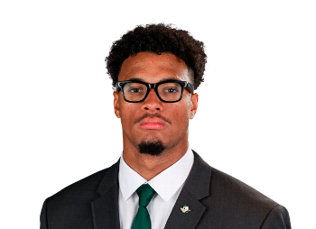

BALL KEEP
Dynasty · Redraft · Ball
Player File · TE NYJ

Kenyon Sadiq
TE · NYJ · 21 · Oregon
Class2026 rookie
Keep avg111.6
# Boards5
BK Value751
Spread88–156
The Keep#117BK 751
The Board#117BK 751
PPR#185BK 225
STD#186BK 221
Rookies#9BK 7,081
Plus
- Rookie #9 — late-first TE1 of the class, Oregon 2025 'problem' reel, Jets landing spot with Wilson.
- Tight end scarcity makes the class TE1 a first-round pick in premium and a late first in Superflex.
Minus
- Jets offense is a hard year-one environment; Wilson will eat first.
- TE development often takes two years; do not need 2026 points.
Every Board
Spread 88–156 · 5 sources
| Source | Rank |
|---|---|
| FantasyPros ECR | 88 |
| Dynasty Nerds | 96 |
| KeepTradeCut SF | 96 |
| PFN (Katz/Soppe) | 122 |
| ESPN (Karabell) | 156 |
Tape · college
Highlights: Newest Jet Kenyon Sadiq was a PROBLEM with Oregon in 2025 | Big Ten on NBC Sports
On The Keep nearby — Jaylen Warren (#115) · Kyle Monangai (#116) · Michael Pittman Jr. (#118) · George Kittle (#119)
All player pages · The Keep · Recent deals · Hot 'n' Cold · BK News